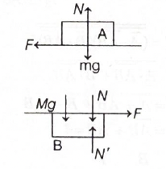
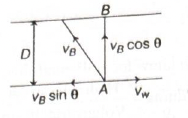
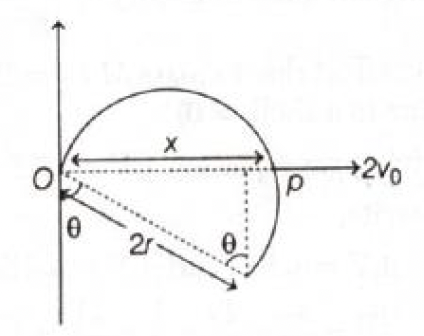

Quick explanation: Bulk modulus is defined as
hydraulic stress divided by volumetric strain. Since volumetric
strain is \(\dfrac{\Delta V}{V}\), we have
\(B=\dfrac{\text{hydraulic stress}}{\Delta V/V}\). For constant
hydraulic stress, \(\dfrac{\Delta V}{V}\) is inversely
proportional to \(B\).
BITSAT chapter / topic / subtopic:
Mechanics of Solids and Fluids \(\rightarrow\) Elasticity -
P95
Mechanics of Solids and Fluids \(\rightarrow\) Stress - P95
Mechanics of Solids and Fluids \(\rightarrow\) Strain - P95
Mechanics of Solids and Fluids \(\rightarrow\) Moduli of
Elasticity - P96
Bulk modulus measures how difficult it is to change the volume
of a body under hydraulic stress.
Since hydraulic stress is constant: \(\dfrac{\Delta
V}{V}\propto\dfrac{1}{B}\).
Final result: Fractional change in volume is
inversely proportional to bulk modulus.
Simple memory tip: Larger bulk modulus means
the object is harder to compress, so volume change is smaller.
Why the other options are wrong:
\((a)\) and \((b)\) wrongly say volume change increases with
bulk modulus.
\((d)\) gives inverse square relation, but the formula gives
simple inverse relation.
Exam shortcut: Remember:
\(B=\dfrac{\text{stress}}{\text{strain}}\). If stress is fixed,
strain \(\propto\dfrac{1}{B}\).
Answer: \((d)\ 24.9\ \mathrm{keV}\)
Quick explanation: The magnetic field bends the
emitted photoelectron in a circular path, so
\(qvB=\dfrac{mv^2}{R}\), giving \(v=\dfrac{qBR}{m}\). From this,
the kinetic energy of the electron is calculated. Then binding
energy is found from: photon energy \(=\) binding energy \(+\)
kinetic energy.
BITSAT chapter / topic / subtopic:
Modern Physics \(\rightarrow\) Photons - P246
Modern Physics \(\rightarrow\) Photoelectric effect - P246
Modern Physics \(\rightarrow\) Einstein's photoelectric equation
- P247
Magnetic Effect of Current \(\rightarrow\) Force on a Charged
Particle in a Uniform Magnetic Field - Page P193
Since the magnetic field is perpendicular to the motion of the
electron, the magnetic force acts as centripetal force.
So: \(qvB=\dfrac{mv^2}{R}\).
Cancelling one \(v\): \(v=\dfrac{qBR}{m}\).
Kinetic energy of the photoelectron:
\(K.E.=\dfrac{1}{2}mv^2=\dfrac{1}{2}m\left(\dfrac{qBR}{m}\right)^2\).
Therefore: \(K.E.=\dfrac{q^2B^2R^2}{2m}\).
Using the given values, the solution gives: \(K.E.=74.4\
\mathrm{keV}\).
Energy of incident X-ray photon is: \(E=\dfrac{hc}{\lambda}\).
Binding energy is found using the photoelectric equation:
\(\text{Binding energy}=E_{\mathrm{photon}}-K.E.\).
Using the answer key's calculation, the binding energy is:
\(24.9\ \mathrm{keV}\).
Important note: The printed solution appears to
contain a numerical inconsistency in the photon-energy line for
the given wavelength. However, the provided answer key marks
option \((d)\), and the expected option is therefore \(24.9\
\mathrm{keV}\).
Final result: Binding energy of K shell
electrons is \(24.9\ \mathrm{keV}\).
Simple memory tip: Magnetic field gives the
electron's kinetic energy from circular motion; X-ray photon
energy supplies both binding energy and kinetic energy.
Why the other options are wrong:
\((a)\), \((b)\), and \((c)\) do not match the answer-key
calculation after using the magnetic-radius relation and
photoelectric equation.
Exam shortcut: Use two formulas only:
\(qvB=\dfrac{mv^2}{R}\) and \(h\nu=\phi+K_{\max}\).
Answer: \((c)\ 625\)
Quick explanation: Power gain is voltage gain
multiplied by current gain. Current gain can be written using
voltage gain and impedances as \(i_G=V_G\dfrac{R_i}{R_o}\). So
power gain
\(=V_G^2\dfrac{R_i}{R_o}=50^2\times\dfrac{100}{400}=625\).
Final result: Power gain of the amplifier is
\(625\).
Simple memory tip: Power gain is not just
voltage gain. It also depends on how current changes, and
current depends on impedance.
Why the other options are wrong:
\((d)\) is only the voltage gain, not the power gain.
\((a)\) and \((b)\) come from incorrect impedance handling.
Exam shortcut: For amplifier questions, use:
\(P_G=V_G^2\dfrac{R_i}{R_o}\).
Answer: \((d)\ 3.75\times10^7\ \mathrm{m/s}\)
Quick explanation: The electrical potential
energy gained by the electron becomes kinetic energy. So
\(eV=\dfrac{1}{2}mv^2\). Therefore, \(v=\sqrt{\dfrac{2eV}{m}}\),
and substituting \(V=4000\ \mathrm{V}\) gives approximately
\(3.75\times10^7\ \mathrm{m/s}\).
BITSAT chapter / topic / subtopic:
Electrostatics \(\rightarrow\) Electric potential - P158
Modern Physics \(\rightarrow\) Electron emission - P246
Electronic Devices \(\rightarrow\) Energy bands of solids or
band theory of solids - P263
In an electron gun, electrons are accelerated by the potential
difference between the filament and the plate.
The energy gained by an electron in potential difference \(V\)
is: \(eV\).
This energy becomes kinetic energy: \(\dfrac{1}{2}mv^2=eV\).
Final result: Velocity of electron is
\(3.75\times10^7\ \mathrm{m/s}\).
Simple memory tip: Electron accelerated through
potential difference \(V\): electrical energy \(eV\) becomes
kinetic energy.
Why the other options are wrong:
\((a)\) is far too small for an electron accelerated through
\(4000\ \mathrm{V}\).
\((b)\) and \((c)\) do not match the direct substitution in
\(v=\sqrt{\dfrac{2eV}{m}}\).
Exam shortcut: For electron acceleration from
rest, directly use: \(v=\sqrt{\dfrac{2eV}{m}}\).
Answer: \((a)\ \dfrac{3GMm}{4R^2}\)
Quick explanation: Before entering the hole,
the man experiences gravitational force due to the full planet:
\(F_1=\dfrac{GMm}{R^2}\). Inside a spherical shell,
gravitational force due to the shell is zero, so only the
central point mass \(M/4\) pulls him:
\(F_2=\dfrac{G(M/4)m}{R^2}\). Hence change in force is
\(F_1-F_2=\dfrac{3GMm}{4R^2}\).
BITSAT chapter / topic / subtopic:
Gravitation \(\rightarrow\) Newton's Law of Gravitation - P82
Gravitation \(\rightarrow\) Gravitational Field - P83
When the man is just outside the planet near the surface, the
whole mass \(M\) of the planet acts gravitationally as if
concentrated at the centre.
So the original gravitational force is:
\(F_1=\dfrac{GMm}{R^2}\).
After entering the hole, the planet is described as a spherical
shell of mass \(3M/4\) plus a point mass \(M/4\) at the centre.
A very important shell theorem result is: gravitational field
inside a uniform spherical shell is zero.
Therefore, the shell of mass \(3M/4\) does not exert
gravitational force on the man when he is inside it.
Only the central point mass \(M/4\) contributes to the force:
\(F_2=\dfrac{G(M/4)m}{R^2}=\dfrac{GMm}{4R^2}\).
Change in gravitational force: \(\Delta F=F_1-F_2\).
Final result: Change in force of gravity is
\(\dfrac{3GMm}{4R^2}\).
Simple memory tip: Inside a spherical shell,
gravity due to the shell is zero. So once he enters the shell,
ignore the \(3M/4\) shell mass completely.
Why the other options are wrong:
\((b)\) is wrong because the force changes from full mass
\(M\) effect to only \(M/4\) effect.
\((c)\) and \((d)\) do not follow from shell theorem and
Newton's law of gravitation.
Exam shortcut: Just compare outside force due
to \(M\) and inside force due to only \(M/4\). Difference
\(=1-\dfrac{1}{4}=\dfrac{3}{4}\) of the original force.
Answer: \((c)\ 4p\)
Quick explanation: Use the ideal gas equation
\(pV=nRT\). Both vessels are identical, so \(V\) is same, and
both contain one mole, so \(n\) is same. Therefore pressure is
directly proportional to temperature, and at \(4T\), pressure
becomes \(4p\).
BITSAT chapter / topic / subtopic:
Heat and Thermodynamics \(\rightarrow\) Kinetic Theory of Gases
- P141
Heat and Thermodynamics \(\rightarrow\) Temperature - P142
For an ideal gas: \(pV=nRT\).
For the first vessel: \(p_1V=n_1RT_1\).
For the second vessel: \(p_2V=n_2RT_2\).
The vessels are identical, so volume \(V\) is the same.
Both vessels contain one mole of gas, so: \(n_1=n_2=1\).
First gas temperature: \(T_1=T\).
Second gas temperature: \(T_2=4T\).
Divide the two gas equations:
\(\dfrac{p_2}{p_1}=\dfrac{n_2}{n_1}\times\dfrac{T_2}{T_1}\).
The molar masses \(32\) and \(4\) are not needed here because
the number of moles is already given as \(1\) in both cases.
Final result: Pressure of helium gas is \(4p\).
Simple memory tip: In \(pV=nRT\), if \(V\) and
\(n\) are fixed, then \(p\propto T\). Gas identity does not
matter for ideal gas pressure if moles are already fixed.
Why the other options are wrong:
\((a)\) and \((d)\) incorrectly use molar mass ratio.
\((b)\) ignores the temperature becoming \(4T\).
Exam shortcut: Same vessel + same moles means
pressure ratio equals temperature ratio:
\(\dfrac{p_2}{p_1}=\dfrac{T_2}{T_1}=4\).
Answer: \((a)\ 21\ \mathrm{cm}\)
Quick explanation: For an open organ pipe, the
first overtone is twice the fundamental frequency, so it is
\(2\times600=1200\ \mathrm{Hz}\). For a closed organ pipe, the
first overtone is the third harmonic: \(f=\dfrac{3v}{4l}\).
Equating \(\dfrac{3\times330}{4l}=1200\) gives \(l\approx21\
\mathrm{cm}\).
For an open organ pipe, the fundamental frequency is:
\(f_0=\dfrac{v}{2l}\).
Its first overtone is the second harmonic:
\(f_{\mathrm{open,1st\ overtone}}=2f_0\).
Given \(f_0=600\ \mathrm{Hz}\), so: \(f_{\mathrm{open,1st\
overtone}}=2\times600=1200\ \mathrm{Hz}\).
For a closed organ pipe, only odd harmonics are present. Its
first overtone is the third harmonic: \(f_{\mathrm{closed,1st\
overtone}}=\dfrac{3v}{4l}\).
The question says both first overtones have the same frequency:
\(1200=\dfrac{3\times330}{4l}\).
Final result: Length of the closed organ pipe
is \(21\ \mathrm{cm}\).
Simple memory tip: Open pipe harmonics are
\(1,2,3,\ldots\), but closed pipe harmonics are only odd:
\(1,3,5,\ldots\). So first overtone of closed pipe means third
harmonic, not second.
Why the other options are wrong:
\((b)\), \((c)\), and \((d)\) do not satisfy
\(\dfrac{3v}{4l}=1200\ \mathrm{Hz}\).
The usual mistake is treating the closed pipe first overtone
as \(2f_0\), but closed pipes do not have even harmonics.
Exam shortcut: Open pipe first overtone
\(=2f_0\); closed pipe first overtone \(=\dfrac{3v}{4l}\).
Equate them directly.
Answer: \((a)\ 0.477\ \mathrm{kcal/s}\)
Quick explanation: Carnot efficiency is
\(\eta=1-\dfrac{T_2}{T_1}\), with temperatures in kelvin. Here
\(T_1=800\ \mathrm{K}\) and \(T_2=400\ \mathrm{K}\), so
\(\eta=\dfrac{1}{2}\). Since \(\eta=\dfrac{W}{Q_1}\), heat
consumed per second is \(Q_1=\dfrac{1.0\ \mathrm{kW}}{1/2}=2.0\
\mathrm{kW}\approx0.477\ \mathrm{kcal/s}\).
BITSAT chapter / topic / subtopic:
Heat and Thermodynamics \(\rightarrow\) Heat Engine - P145
Heat and Thermodynamics \(\rightarrow\) Carnot Engine - P146
Heat and Thermodynamics \(\rightarrow\) Second Law of
Thermodynamics - P146
Convert the two temperatures into kelvin: \(T_1=527+273=800\
\mathrm{K}\).
\(T_2=127+273=400\ \mathrm{K}\).
Efficiency of a Carnot engine is: \(\eta=1-\dfrac{T_2}{T_1}\).
Given useful mechanical work rate: \(W=1.0\ \mathrm{kW}\).
So: \(Q_1=\dfrac{W}{\eta}=\dfrac{1.0}{1/2}=2.0\ \mathrm{kW}\).
Convert \(2.0\ \mathrm{kW}\) into \(\mathrm{kcal/s}\): \(2.0\
\mathrm{kW}=2000\ \mathrm{J/s}\).
Since \(1\ \mathrm{kcal}\approx4184\ \mathrm{J}\):
\(Q_1=\dfrac{2000}{4184}\approx0.477\ \mathrm{kcal/s}\).
Final result: Heat consumed per second is
\(0.477\ \mathrm{kcal/s}\).
Simple memory tip: Carnot formula always needs
kelvin, never Celsius. First convert, then use
\(\eta=1-\dfrac{T_{\mathrm{cold}}}{T_{\mathrm{hot}}}\).
Why the other options are wrong:
\((b)\) and \((c)\) are too large due to wrong conversion or
efficiency handling.
\((d)\) is half the correct value and comes from taking heat
input equal to useful output incorrectly.
Exam shortcut: Here \(800\ \mathrm{K}\) and
\(400\ \mathrm{K}\) make efficiency \(50\%\). So heat input rate
must be twice the work output rate.
Answer: \((d)\ 1.51\ \mathrm{eV}\)
Quick explanation: For an electron in a Bohr
orbit, potential energy \(U=-2K\), where \(K\) is kinetic
energy. Hence total energy \(E=K+U=K-2K=-K\). Since \(E=-1.51\
\mathrm{eV}\), kinetic energy is \(K=1.51\ \mathrm{eV}\).
BITSAT chapter / topic / subtopic:
Modern Physics \(\rightarrow\) Bohr's model - P248
Modern Physics \(\rightarrow\) Spectral series of hydrogen atom
- P249
In a hydrogen atom, the electron is bound to the nucleus by
electrostatic force.
For a Bohr orbit: \(U=-2K\).
Total energy is: \(E=K+U\).
Substitute \(U=-2K\): \(E=K-2K=-K\).
Therefore: \(K=-E\).
Given: \(E=-1.51\ \mathrm{eV}\).
So: \(K=-(-1.51)=1.51\ \mathrm{eV}\).
Final result: Kinetic energy is \(1.51\
\mathrm{eV}\).
Simple memory tip: In Bohr atom, total energy
is negative, kinetic energy is positive, and \(K=-E\).
Why the other options are wrong:
\((a)\) and \((b)\) are negative, but kinetic energy cannot
be negative.
\((c)\) is double the correct value and would confuse
potential energy magnitude with kinetic energy.
Exam shortcut: For hydrogen-like Bohr orbit
questions, remember: \(U=2E\), \(K=-E\), and \(U=-2K\).
Answer: \((d)\ \dfrac{9mMv_0^2}{2F(m+M)}\)
Quick explanation: Friction retards block \(A\)
with acceleration \(\dfrac{F}{m}\) and accelerates block \(B\)
with acceleration \(\dfrac{F}{M}\). So the relative acceleration
of \(A\) with respect to \(B\) is
\(-F\left(\dfrac{M+m}{Mm}\right)\). Using relative motion
equation \(0=(3v_0)^2+2a_{\mathrm{rel}}s\), we get
\(s=\dfrac{9mMv_0^2}{2F(M+m)}\).
BITSAT chapter / topic / subtopic:
Newton's Laws of Motion \(\rightarrow\) Friction - P33
Newton's Laws of Motion \(\rightarrow\) Motion of bodies in
contact - P34
Kinematics \(\rightarrow\) Relative velocity - P19
Impulse and Momentum \(\rightarrow\) Momentum of a System of
Particles - P46

Block \(A\) initially moves to the right with speed \(3v_0\),
while block \(B\) is initially at rest.
Friction opposes relative motion. So friction acts on \(A\)
opposite to its motion, and on \(B\) in the forward direction.
Acceleration of \(A\): \(a_A=-\dfrac{F}{m}\).
Acceleration of \(B\): \(a_B=\dfrac{F}{M}\).
Relative acceleration of \(A\) with respect to \(B\) is:
\(a_{AB}=a_A-a_B\).
So: \(a_{AB}=-\dfrac{F}{m}-\dfrac{F}{M}\).
\(a_{AB}=-F\left(\dfrac{M+m}{Mm}\right)\).
Initial relative velocity of \(A\) with respect to \(B\) is:
\(u_{AB}=3v_0\).
When both blocks move with the same velocity, their relative
velocity becomes zero: \(v_{AB}=0\).
Use: \(v^2=u^2+2as\).
For relative motion:
\(0=(3v_0)^2+2\left[-F\left(\dfrac{M+m}{Mm}\right)\right]s\).
Therefore: \(0=9v_0^2-\dfrac{2F(M+m)}{Mm}s\).
Rearranging: \(s=\dfrac{9mMv_0^2}{2F(M+m)}\).
Final result: Distance moved by \(A\) relative
to \(B\) is \(\dfrac{9mMv_0^2}{2F(M+m)}\).
Simple memory tip: In relative slipping
questions, focus on how quickly the relative velocity becomes
zero. Here friction reduces relative velocity from \(3v_0\) to
zero.
Why the other options are wrong:
\((a)\) and \((b)\) wrongly contain \(m-M\), but relative
acceleration depends on \(\dfrac{1}{m}+\dfrac{1}{M}\), so
\(m+M\) must appear.
\((c)\) misses the factor \(\dfrac{9}{2}\) from \((3v_0)^2\)
and the kinematic equation.
Exam shortcut: For two blocks with constant
friction, write relative acceleration directly:
\(a_{\mathrm{rel}}=-F\left(\dfrac{1}{m}+\dfrac{1}{M}\right)\),
then use \(0=u_{\mathrm{rel}}^2+2a_{\mathrm{rel}}s\).
Answer: \((d)\ MB\)
Quick explanation: Work done in rotating a
magnetic dipole in a uniform magnetic field is
\(W=mB(1-\cos\theta)\), when rotated from the field direction
through angle \(\theta\). Here magnetic moment is \(2M\),
magnetic field is \(B/2\), and \(\theta=90^\circ\). So
\(W=2M\times\dfrac{B}{2}\times(1-\cos90^\circ)=MB\).
BITSAT chapter / topic / subtopic:
Magnetic Effect of Current \(\rightarrow\) Magnetic Field -
P191
Magnetic Effect of Current \(\rightarrow\) Torque on a
Current-Carrying Coil Placed in a Uniform Magnetic Field - P194
A bar magnet behaves like a magnetic dipole in a magnetic field.
Work done in rotating a magnetic dipole from \(0^\circ\) to
\(\theta\) is: \(W=mB(1-\cos\theta)\).
Since \(\cos90^\circ=0\):
\(W=(2M)\left(\dfrac{B}{2}\right)=MB\).
Final result: Work done is \(MB\).
Simple memory tip: Magnetic dipole work is like
storing energy against alignment. If the magnet is turned from
along the field to \(90^\circ\), use \(1-\cos90^\circ=1\).
Why the other options are wrong:
\((a)\) is wrong because work is needed to rotate the magnet
away from the field direction.
\((b)\) misses the given magnetic moment \(2M\).
\((c)\) ignores that the magnetic field is \(B/2\), not
\(B\).
Exam shortcut: Directly multiply magnetic
moment and field, then apply \(1-\cos\theta\). Here
\(2M\times\dfrac{B}{2}=MB\), and \(90^\circ\) makes the angle
factor equal to \(1\).
Answer: \((b)\ 38\)
Quick explanation: Beat frequency is the
difference between the two frequencies: \(n=|f_1-f_2|\). First
find speed of sound at \(20^\circ\mathrm{C}\) using
\(v\propto\sqrt{T}\). Then use \(f=\dfrac{v}{\lambda}\) for both
wavelengths and subtract.
BITSAT chapter / topic / subtopic:
Waves \(\rightarrow\) Waves - P126
Waves \(\rightarrow\) Interference of Waves - P129
Waves \(\rightarrow\) Factors affecting the speed of sound in a
gaseous medium - P126
Given wavelengths: \(\lambda_1=40\ \mathrm{cm}=0.40\
\mathrm{m}\) and \(\lambda_2=42\ \mathrm{cm}=0.42\ \mathrm{m}\).
Speed of sound depends on absolute temperature as:
\(v\propto\sqrt{T}\).
At \(0^\circ\mathrm{C}\), temperature is \(273\ \mathrm{K}\),
and at \(20^\circ\mathrm{C}\), temperature is \(293\
\mathrm{K}\).
So: \(\dfrac{v_{20}}{v_0}=\sqrt{\dfrac{293}{273}}\).
Using the given solution value: \(v_{20}\approx319.23\
\mathrm{m/s}\).
Frequency of first wave:
\(f_1=\dfrac{v}{\lambda_1}=\dfrac{319.23}{0.40}=798.075\
\mathrm{Hz}\).
Frequency of second wave:
\(f_2=\dfrac{v}{\lambda_2}=\dfrac{319.23}{0.42}=760.071\
\mathrm{Hz}\).
Number of beats per second: \(n=|f_1-f_2|\).
\(n=798.075-760.071\approx38\ \mathrm{Hz}\).
Final result: Number of beats produced per
second is \(38\).
Simple memory tip: Beats are heard when two
frequencies are close. Beat frequency is simply the difference
between the frequencies.
Why the other options are wrong:
\((a)\) and \((c)\) do not match the frequency difference.
\((d)\) is wrong because \(38\) is present as option
\((b)\).
Exam shortcut: Convert wavelengths to metre,
calculate \(f=\dfrac{v}{\lambda}\), then subtract. Similar
wavelengths give close frequencies, so beats are expected.
Answer: \((d)\ 120, 180, 120\ \mathrm{V}\)
Quick explanation: In a series AC circuit, the
same current flows through \(R\), \(L\), and \(C\). So the
voltage across each element is current multiplied by its
resistance or reactance: \(V_R=iR\), \(V_L=iX_L\), and
\(V_C=iX_C\). With \(i=5\ \mathrm{A}\), the voltages are \(120\
\mathrm{V}\), \(180\ \mathrm{V}\), and \(120\ \mathrm{V}\).
Given: \(R=24\Omega\), \(X_L=36\Omega\), \(X_C=24\Omega\), and
\(i=5\ \mathrm{A}\).
Voltage across resistance: \(V_R=iR\).
\(V_R=5\times24=120\ \mathrm{V}\).
Voltage across inductor: \(V_L=iX_L\).
\(V_L=5\times36=180\ \mathrm{V}\).
Voltage across capacitor: \(V_C=iX_C\).
\(V_C=5\times24=120\ \mathrm{V}\).
Therefore, potential differences across \(R\), \(L\), and \(C\)
are: \(120\ \mathrm{V}, 180\ \mathrm{V}, 120\ \mathrm{V}\).
Final result: \(V_R=120\ \mathrm{V}\),
\(V_L=180\ \mathrm{V}\), \(V_C=120\ \mathrm{V}\).
Simple memory tip: In series circuit, current
is same everywhere. Multiply the same current with each
resistance/reactance separately.
Why the other options are wrong:
\((a)\), \((b)\), and \((c)\) do not match \(V=iX\) for the
given values.
The inductor must have the largest voltage here because
\(X_L=36\Omega\) is the largest opposition.
Exam shortcut: Do not calculate total impedance
unless asked for supply voltage. For individual potential
differences, directly use \(iR\), \(iX_L\), and \(iX_C\).
Answer: \((d)\)
Quick explanation: The gate combination
simplifies to a logic output \(Y=1\). That means for every input
combination of \(A\) and \(B\), the output remains \(1\). Hence
the correct truth table is option \((d)\).
The two middle NAND gate outputs are:
\(Y_2=\overline{A\cdot\overline{AB}}\) and
\(Y_3=\overline{B\cdot\overline{AB}}\).
The next gate and NOT gate combination gives the final output:
\(Y=\overline{\overline{(A\cdot\overline{AB})(B\cdot\overline{AB})}}\).
On Boolean simplification, this becomes:
\(Y=\overline{A}+AB+\overline{B}+AB\).
This simplifies to: \(Y=\overline{A}+\overline{B}+AB\).
Now \(\overline{A}+AB=\overline{A}+B\), so:
\(Y=\overline{A}+B+\overline{B}=1\).
Therefore, the output is always \(1\), for all input
combinations.
The truth table is:
\(A\)
\(B\)
\(Y\)
0
0
1
0
1
1
1
0
1
1
1
1
Final result: Correct truth table is option
\((d)\).
Simple memory tip: In NAND-gate networks, first
write each intermediate output, then simplify using Boolean
identities. If expression becomes \(B+\overline{B}\), it
immediately becomes \(1\).
Why the other options are wrong:
\((a)\), \((b)\), and \((c)\) show at least one zero output,
but the simplified expression gives \(Y=1\) for all input
combinations.
Exam shortcut: Once the expression contains a
term and its complement added together, such as
\(B+\overline{B}\), the whole output becomes \(1\).
Answer: \((d)\ \dfrac{\sqrt{2}D}{v_B}\)
Quick explanation: To cross directly along
\(AB\), the horizontal component of boat velocity must cancel
the river current: \(v_B\sin\theta=v_\omega\). Since
\(v_B=\sqrt{2}v_\omega\), \(\sin\theta=\dfrac{1}{\sqrt{2}}\), so
\(\theta=45^\circ\). The effective crossing speed is
\(v_B\cos45^\circ\), hence
\(t=\dfrac{D}{v_B\cos45^\circ}=\dfrac{\sqrt{2}D}{v_B}\).
BITSAT chapter / topic / subtopic:
Kinematics \(\rightarrow\) Relative velocity - P19
Kinematics \(\rightarrow\) Rectangular component of a vector in
a plane - P19

The river current pushes the boat sideways with speed
\(v_\omega\). To land exactly opposite at \(B\), the boat must
aim slightly upstream.
The sideways component of the boat velocity must cancel the
water current: \(v_B\sin\theta=v_\omega\).
Since \(\cos45^\circ=\dfrac{1}{\sqrt{2}}\):
\(t=\dfrac{D}{v_B/\sqrt{2}}=\dfrac{\sqrt{2}D}{v_B}\).
Final result: Time taken by the boat is
\(\dfrac{\sqrt{2}D}{v_B}\).
Simple memory tip: For shortest/direct crossing
to the point exactly opposite, cancel the river's sideways push
first.
Why the other options are wrong:
\((a)\), \((b)\), and \((c)\) do not use the correct
crossing component \(v_B\cos45^\circ\).
The sideways component cancels current; it does not help in
crossing the river width.
Exam shortcut: Direct crossing condition:
\(v_B\sin\theta=v_{\mathrm{river}}\). Then crossing time:
\(t=\dfrac{D}{v_B\cos\theta}\).
Answer: \((c)\ 4\)
Quick explanation: For a ring, moment of
inertia about an axis through its centre is \(I=MR^2\). Since
both rings are made of the same material, their masses are
proportional to their circumferences, so \(M\propto R\). Hence
\(I\propto R^3\), and
\(\dfrac{I_1}{I_2}=\left(\dfrac{R}{nR}\right)^3=\dfrac{1}{n^3}\).
Given \(\dfrac{I_1}{I_2}=\dfrac{1}{64}\), so \(n=4\).
BITSAT chapter / topic / subtopic:
Rotational Motion \(\rightarrow\) Moment of Inertia - P70
Rotational Motion \(\rightarrow\) Moment of Inertia and Radius
of gyration of some regular bodies about specific axis - P71
Moment of inertia of a thin ring about an axis passing through
its centre and perpendicular to its plane is: \(I=MR^2\).
Since both rings are made of the same material, their linear
density \(\lambda\) is constant.
Mass of a ring is: \(M=\lambda(2\pi R)\).
Therefore, mass is proportional to radius: \(M\propto R\).
So: \(I=MR^2\propto R\times R^2=R^3\).
For the two rings:
\(\dfrac{I_1}{I_2}=\left(\dfrac{R}{nR}\right)^3=\dfrac{1}{n^3}\).
Given: \(\dfrac{I_1}{I_2}=\dfrac{1}{64}\).
Hence: \(\dfrac{1}{n^3}=\dfrac{1}{64}\).
So: \(n^3=64\).
Therefore: \(n=4\).
Final result: The value of \(n\) is \(4\).
Simple memory tip: For rings made from the same
wire material, larger radius means larger mass also. So \(I\)
grows as \(R^3\), not just \(R^2\).
Why the other options are wrong:
\((a)\), \((b)\), and \((d)\) do not satisfy
\(\dfrac{1}{n^3}=\dfrac{1}{64}\).
The common mistake is taking mass as same for both rings,
but the material is same, not the mass.
Exam shortcut: Same material ring means
\(M\propto R\), so \(I=MR^2\propto R^3\).
Quick explanation: Fundamental frequency of a
string is \(\nu=\dfrac{1}{2l}\sqrt{\dfrac{T}{\mu}}\). For the
same string under the same tension, \(\nu\propto\dfrac{1}{l}\),
so \(l\propto\dfrac{1}{\nu}\). Since total length
\(l=l_1+l_2+l_3+l_4\), the reciprocals of frequencies add.
Fundamental frequency of a stretched string is:
\(\nu=\dfrac{1}{2l}\sqrt{\dfrac{T}{\mu}}\).
Here the tension \(T\) and linear mass density \(\mu\) are same
for all pieces of the same string.
Therefore: \(\nu\propto\dfrac{1}{l}\).
So: \(l\propto\dfrac{1}{\nu}\).
Since the original string is divided into four parts:
\(l=l_1+l_2+l_3+l_4\).
Convert each length into reciprocal frequency form:
\(\dfrac{1}{\nu}=\dfrac{1}{\nu_1}+\dfrac{1}{\nu_2}+\dfrac{1}{\nu_3}+\dfrac{1}{\nu_4}\).
Final result:
\(\dfrac{1}{\nu}=\dfrac{1}{\nu_1}+\dfrac{1}{\nu_2}+\dfrac{1}{\nu_3}+\dfrac{1}{\nu_4}\).
Simple memory tip: Longer string gives lower
frequency. So length behaves like reciprocal of frequency.
Why the other options are wrong:
\((a)\), \((b)\), and \((d)\) use the wrong proportionality.
Frequencies do not directly add here; lengths add.
Exam shortcut: If a string is cut into pieces
and tension is unchanged, write \(l\propto\dfrac{1}{\nu}\), then
add the lengths.
Answer: \((a)\ 8\%\)
Quick explanation: Radius of circular path in a
magnetic field is \(r=\dfrac{mv}{qB}\). Since kinetic energy
\(K=\dfrac{1}{2}mv^2\), speed \(v\propto\sqrt{K}\), and
therefore \(r\propto\sqrt{K}\). So percentage change in radius
is half the percentage change in kinetic energy:
\(\dfrac{1}{2}\times16\%=8\%\).
BITSAT chapter / topic / subtopic:
Magnetic Effect of Current \(\rightarrow\) Force on a Charged
Particle in a Uniform Magnetic Field - Page P193
Work and Energy \(\rightarrow\) Energy - P58
For a charged particle moving perpendicular to a uniform
magnetic field: \(r=\dfrac{mv}{qB}\).
Kinetic energy is: \(K=\dfrac{1}{2}mv^2\).
Therefore: \(v\propto\sqrt{K}\).
Since \(m\), \(q\), and \(B\) are constant: \(r\propto
v\propto\sqrt{K}\).
For small percentage changes: \(\dfrac{\Delta
r}{r}\times100=\dfrac{1}{2}\dfrac{\Delta K}{K}\times100\).
Since kinetic energy is lost, radius decreases by \(8\%\).
Final result: Radius of curvature changes by
\(8\%\).
Simple memory tip: In magnetic circular motion,
radius follows speed, and speed follows square root of kinetic
energy. So percentage change in radius is half the percentage
change in kinetic energy.
Why the other options are wrong:
\((b)\), \((c)\), and \((d)\) do not use
\(r\propto\sqrt{K}\).
\((d)\) would be correct only if radius were directly
proportional to kinetic energy, which it is not.
Exam shortcut: Remember:
\(r=\dfrac{\sqrt{2mK}}{qB}\), so \(r\propto\sqrt{K}\).
Answer: \((c)\ \dfrac{2v_0}{r}\)
Quick explanation: From the geometry of the
semicircle, the horizontal position of the peg is
\(x=2r\sin\theta\). Differentiating gives
\(\dfrac{dx}{dt}=2r\cos\theta\dfrac{d\theta}{dt}\). Since the
peg moves with speed \(2v_0\), at \(\theta=60^\circ\),
\(\omega=\dfrac{d\theta}{dt}=\dfrac{2v_0}{2r\cos60^\circ}=\dfrac{2v_0}{r}\).
BITSAT chapter / topic / subtopic:
Rotational Motion \(\rightarrow\) Angular Velocity - P69
Kinematics \(\rightarrow\) Rectangular component of a vector in
a plane - P19
Kinematics \(\rightarrow\) Uniform circular motion - P21

The peg moves horizontally, so its horizontal displacement from
\(O\) is \(x\).
From the geometry of the semicircle, the diameter of the
semicircle is \(2r\), and the horizontal distance is:
\(x=2r\sin\theta\).
Differentiate both sides with respect to time:
\(\dfrac{dx}{dt}=2r\cos\theta\dfrac{d\theta}{dt}\).
The peg moves with constant horizontal speed:
\(\dfrac{dx}{dt}=2v_0\).
Angular velocity of the frame is:
\(\omega=\dfrac{d\theta}{dt}\).
At \(\theta=60^\circ\): \(\omega=\dfrac{2v_0}{2r\cos60^\circ}\).
Since \(\cos60^\circ=\dfrac{1}{2}\): \(\omega=\dfrac{2v_0}{r}\).
Final result: The angular velocity of the frame
is \(\dfrac{2v_0}{r}\).
Simple memory tip: Convert the geometry into an
equation first, then differentiate. Here \(x=2r\sin\theta\) is
the key relation.
Why the other options are wrong:
\((a)\) misses the effect of \(\cos60^\circ=\dfrac{1}{2}\).
\((b)\) is too small because it treats the peg speed or
angle factor incorrectly.
\((d)\) has wrong dimensions for angular velocity.
Exam shortcut: For constrained-motion problems,
write the position relation and differentiate. Here
\(x=2r\sin\theta\Rightarrow v=2r\cos\theta\,\omega\).
Answer: \((b)\ 40\ \mathrm{min}\)
Quick explanation: After each half-life, the
remaining amount becomes half. Here one-eighth remains, and
\(\dfrac{1}{8}=\left(\dfrac{1}{2}\right)^3\), so \(3\)
half-lives have passed in \(2\ \mathrm{h}\). Hence one half-life
is \(\dfrac{2}{3}\ \mathrm{h}=40\ \mathrm{min}\).
\((a)\), \((c)\), and \((d)\) do not divide the total time
\(2\ \mathrm{h}\) into \(3\) equal half-lives.
Exam shortcut: Convert the remaining fraction
into a power of \(\dfrac{1}{2}\). Here \(1/8=(1/2)^3\), so
directly divide the total time by \(3\).
Answer: \((a)\ f=0.53\ \mathrm{m}\)
Quick explanation: For the shifted half-lens,
the object-image separation is \(u_2+v_2=2.4\ \mathrm{m}\), and
magnification is \(2\). Using the relations from lens geometry
and applying the lens formula to both halves gives \(d=0.8\
\mathrm{m}\). Substituting in the lens formula gives
\(f\approx0.53\ \mathrm{m}\).
Final result: The focal length is \(f=0.53\
\mathrm{m}\).
Simple memory tip: When one half-lens is
shifted, use the same lens formula for both halves, but
carefully adjust the object and image distances by \(d\).
Why the other options are wrong:
\((b)\) and \((c)\) do not follow from the lens formula
after using the shifted distances.
\((d)\) gives an incorrect separation; the calculation gives
\(d=0.8\ \mathrm{m}\), not \(0.9\ \mathrm{m}\).
Exam shortcut: For split-lens questions, draw
shifted distances clearly first. Then apply magnification and
lens formula to get \(d\), followed by \(f\).
Answer: \((b)\ \dfrac{1}{2}(\hat{i}+\hat{j})\)
Quick explanation: Force is the negative
gradient of potential energy: \(\vec{F}=-\nabla u\). Since
\(u(x,y)=\cos(x+y)\), we get \(F_x=-\dfrac{\partial u}{\partial
x}=\sin(x+y)\) and \(F_y=-\dfrac{\partial u}{\partial
y}=\sin(x+y)\). At \((0,\pi/6)\),
\(\sin(x+y)=\sin(\pi/6)=\dfrac{1}{2}\).
BITSAT chapter / topic / subtopic:
Work and Energy \(\rightarrow\) Energy - P58
Work and Energy \(\rightarrow\) Work done by a force - P58
Kinematics \(\rightarrow\) Rectangular component of a vector in
a plane - P19
For a conservative force field, force is related to potential
energy by: \(\vec{F}=-\nabla u\).
In two dimensions: \(\vec{F}=-\dfrac{\partial u}{\partial
x}\hat{i}-\dfrac{\partial u}{\partial y}\hat{j}\).
Given: \(u(x,y)=\cos(x+y)\).
Differentiate with respect to \(x\): \(\dfrac{\partial
u}{\partial x}=-\sin(x+y)\).
Final result: The force acting on the particle
is \(\dfrac{1}{2}(\hat{i}+\hat{j})\).
Simple memory tip: Force points in the
direction where potential energy decreases fastest, so always
put the negative sign: \(\vec{F}=-\nabla u\).
Why the other options are wrong:
\((a)\) has the wrong sign and wrong magnitude.
\((c)\) and \((d)\) treat the \(x\) and \(y\) components as
different, but here both derivatives give the same value.
Exam shortcut: For \(u=\cos(x+y)\), both
partial derivatives are the same, so both force components must
be equal. That immediately points to option \((b)\).
Answer: \((b)\ 5\sqrt{6}\ \mathrm{A}\)
Quick explanation: The total current is
\(i=10+10\sin\omega t\). Effective current means rms value, so
square the current, take average over one complete cycle, and
then take the square root. Since average of \(\sin\omega t\) is
\(0\) and average of \(\sin^2\omega t\) is \(\dfrac{1}{2}\), we
get \(i_{\mathrm{eff}}=\sqrt{100+50}=5\sqrt{6}\ \mathrm{A}\).
BITSAT chapter / topic / subtopic:
Electromagnetic Induction \(\rightarrow\) Alternating Current -
P211
Electromagnetic Induction \(\rightarrow\) AC Current - P211
Total current through the wire is: \(i=10+10\sin\omega t\).
Effective current or rms current is:
\(i_{\mathrm{eff}}=\sqrt{\dfrac{1}{T}\int_0^T i^2\,dt}\).
Substitute the current:
\(i_{\mathrm{eff}}=\sqrt{\dfrac{1}{T}\int_0^T (10+10\sin\omega
t)^2\,dt}\).
Quick explanation: From the graph, amplitude is
\(1\ \mathrm{m}\) and time period is \(8\ \mathrm{s}\). So
\(x=\sin\left(\dfrac{\pi t}{4}\right)\). In SHM,
\(a=-\omega^2x\); at \(t=2\ \mathrm{s}\), \(x=1\), hence
\(a=-\left(\dfrac{\pi}{4}\right)^2=-\dfrac{\pi^2}{16}\
\mathrm{ms^{-2}}\).
Final result: Acceleration at \(t=2\
\mathrm{s}\) is \(-\dfrac{\pi^2}{16}\ \mathrm{ms^{-2}}\).
Simple memory tip: In SHM, acceleration always
points toward the mean position. At maximum positive
displacement, acceleration is maximum negative.
Why the other options are wrong:
\((a)\) has wrong magnitude.
\((b)\) and \((d)\) have positive sign, but at \(t=2\
\mathrm{s}\), the particle is at positive extreme, so
acceleration must be negative.
Exam shortcut: From graph, identify \(A\) and
\(T\). Then use \(a=-\omega^2x\) instead of differentiating
twice.
Answer: \((b)\ 1.5\)
Quick explanation: Apparent depth through a
liquid layer is \(\dfrac{\text{real thickness}}{\text{refractive
index}}\). If total depth is \(d\), each liquid has thickness
\(\dfrac{d}{2}\). So apparent depth is
\(\dfrac{d/2}{\mu}+\dfrac{d/2}{2\mu}\). Given this equals
\(\dfrac{d}{2}\), solving gives \(\mu=1.5\).
BITSAT chapter / topic / subtopic:
Optics \(\rightarrow\) Refraction of Light - P226
Optics \(\rightarrow\) Real depth and apparent depth - P226
Let the actual depth of the vessel be \(d\).
The vessel is half filled with one liquid and half with another,
so each layer has thickness: \(\dfrac{d}{2}\).
Apparent depth of first liquid layer: \(\dfrac{d/2}{\mu}\).
Apparent depth of second liquid layer: \(\dfrac{d/2}{2\mu}\).
Total apparent depth: \(\dfrac{d/2}{\mu}+\dfrac{d/2}{2\mu}\).
Given apparent depth is \(50\%\) of actual depth:
\(\dfrac{d/2}{\mu}+\dfrac{d/2}{2\mu}=\dfrac{d}{2}\).
Divide by \(d/2\): \(\dfrac{1}{\mu}+\dfrac{1}{2\mu}=1\).
So: \(\dfrac{3}{2\mu}=1\).
Therefore: \(\mu=\dfrac{3}{2}=1.5\).
Final result: \(\mu=1.5\).
Simple memory tip: For layered liquids,
apparent depths add layer by layer. Each layer contributes
\(\dfrac{\text{thickness}}{\text{refractive index}}\).
Why the other options are wrong:
\((a)\), \((c)\), and \((d)\) do not satisfy
\(\dfrac{1}{\mu}+\dfrac{1}{2\mu}=1\).
Exam shortcut: For two half-depth layers:
apparent depth
\(=\dfrac{d}{2}\left(\dfrac{1}{\mu_1}+\dfrac{1}{\mu_2}\right)\).
Answer: \((a)\ \dfrac{2\eta k}{a}\)
Quick explanation: Shear stress in a fluid is
\(\tau=\eta_{\mathrm{vis}}\dfrac{dv}{dy}\). Here the coefficient
of viscosity is \(2\eta\), so \(\tau=2\eta\dfrac{dv}{dy}\).
Differentiate the velocity expression and put \(y=a\), giving
\(\tau=\dfrac{2\eta k}{a}\).
BITSAT chapter / topic / subtopic:
Mechanics of Solids and Fluids \(\rightarrow\) Fluids - P97
Mechanics of Solids and Fluids \(\rightarrow\) Viscosity - P100
Newton's law of viscosity gives:
\(\tau=\dfrac{F}{A}=\eta_{\mathrm{vis}}\dfrac{dv}{dy}\).
Given coefficient of viscosity: \(\eta_{\mathrm{vis}}=2\eta\).
Final result: Shear stress at \(y=a\) is
\(\dfrac{2\eta k}{a}\).
Simple memory tip: Viscous stress depends on
how fast velocity changes from one layer to the next, so always
differentiate \(v\) with respect to \(y\).
Why the other options are wrong:
\((b)\) and \((c)\) have incorrect dependence on \(k\),
\(a\), and \(\eta\).
\((d)\) is wrong because option \((a)\) matches Newton's law
of viscosity.
Exam shortcut: For viscosity profile questions,
use \(\tau=\eta\dfrac{dv}{dy}\), differentiate first, then
substitute the given \(y\)-value.
Answer: \((c)\ 5\Omega\)
Quick explanation: The resistors \(R\) and
\(5\Omega\) are in parallel across a \(10\ \mathrm{V}\) source.
First write the equivalent resistance:
\(R_{\mathrm{eq}}=\dfrac{5R}{5+R}\). Using total power
\(P=\dfrac{V^2}{R_{\mathrm{eq}}}=40\), solving gives
\(R=5\Omega\).
BITSAT chapter / topic / subtopic:
Current Electricity \(\rightarrow\) Combination of resistors -
P175
Current Electricity \(\rightarrow\) Electric power - P178
The two resistors \(R\) and \(5\Omega\) are connected in
parallel.
For parallel combination:
\(\dfrac{1}{R_{\mathrm{eq}}}=\dfrac{1}{R}+\dfrac{1}{5}\).
So: \(\dfrac{1}{R_{\mathrm{eq}}}=\dfrac{5+R}{5R}\).
Therefore: \(R_{\mathrm{eq}}=\dfrac{5R}{5+R}\).
Power dissipated by the circuit is:
\(P=\dfrac{V^2}{R_{\mathrm{eq}}}\).
Given: \(P=40\ \mathrm{W}\) and \(V=10\ \mathrm{V}\).
Substitute: \(40=\dfrac{10^2}{R_{\mathrm{eq}}}\).
So: \(R_{\mathrm{eq}}=\dfrac{100}{40}=2.5\Omega\).
Now: \(\dfrac{5R}{5+R}=2.5\).
\(5R=2.5(5+R)\).
\(5R=12.5+2.5R\).
\(2.5R=12.5\), hence: \(R=5\Omega\).
Final result: The value of \(R\) is
\(5\Omega\).
Simple memory tip: In a parallel circuit,
voltage is same across each branch, but total power depends on
the equivalent resistance of the whole network.
Why the other options are wrong:
\((a)\), \((b)\), and \((d)\) do not give total equivalent
resistance \(2.5\Omega\).
Since one branch is \(5\Omega\), the parallel equivalent
must be less than \(5\Omega\); \(R=5\Omega\) gives exactly
\(2.5\Omega\).
Exam shortcut: From
\(P=\dfrac{V^2}{R_{\mathrm{eq}}}\), first get
\(R_{\mathrm{eq}}\). Here \(R_{\mathrm{eq}}=2.5\Omega\), so two
equal \(5\Omega\) resistors in parallel immediately fit.
Answer: \((b)\ 7.2,\ \dfrac{D(\mu-1)t}{d}\)
Quick explanation: A transparent sheet
introduces an extra optical path difference \((\mu-1)t\). For
the shifted central maximum, this must be balanced by path
difference \(d\sin\theta\). So
\(\sin\theta=\dfrac{(\mu-1)t}{d}=0.125\), giving
\(\theta\approx7.2^\circ\), and for small angle
\(y=D\tan\theta\approx\dfrac{D(\mu-1)t}{d}\).
For small angles: \(\sin\theta\approx\tan\theta\).
Also: \(\tan\theta=\dfrac{y}{D}\).
So: \(\dfrac{y}{D}\approx\dfrac{(\mu-1)t}{d}\).
Therefore: \(y=\dfrac{D(\mu-1)t}{d}\).
Final result: New angular position is
approximately \(7.2^\circ\), and \(y=\dfrac{D(\mu-1)t}{d}\).
Simple memory tip: Transparent sheet shift in
YDSE is controlled by extra path \((\mu-1)t\). Central maximum
moves to cancel that extra path.
Why the other options are wrong:
\((a)\) has the correct angle but an extra factor \(2\) in
the denominator.
\((c)\) has the wrong angle.
\((d)\) uses \((\mu+1)\), but the extra optical path is
\((\mu-1)t\).
Exam shortcut: For sheet in front of one slit,
remember: fringe shift \(y=\dfrac{D(\mu-1)t}{d}\), and angular
shift \(\sin\theta=\dfrac{(\mu-1)t}{d}\).
Answer: \((a)\ (E=E_0\hat{i},\ B=B_0\hat{j})\)
Quick explanation: In an electromagnetic wave,
electric field, magnetic field, and direction of propagation are
mutually perpendicular. The direction of propagation is given by
\(\vec{E}\times\vec{B}\). For option \((a)\),
\(\hat{i}\times\hat{j}=\hat{k}\), so the wave propagates along
the \(+Z\)-axis.
BITSAT chapter / topic / subtopic:
Waves \(\rightarrow\) Waves - P126
Electrostatics \(\rightarrow\) Electric field - P156
Magnetic Effect of Current \(\rightarrow\) Magnetic Field - P191
In an electromagnetic wave, \(\vec{E}\perp\vec{B}\), and both
are perpendicular to the direction of wave propagation.
The wave travels in the direction of: \(\vec{E}\times\vec{B}\).
The question says the wave propagates along the \(Z\)-axis, so
\(\vec{E}\times\vec{B}\) should be along \(\hat{k}\).
In option \((a)\): \(\vec{E}=E_0\hat{i}\) and
\(\vec{B}=B_0\hat{j}\).
This is along the \(+Z\)-axis, so option \((a)\) is correct.
Final result: The fields can be represented as
\(E=E_0\hat{i}\), \(B=B_0\hat{j}\).
Simple memory tip: Use the right-hand rule:
\(x\)-direction crossed with \(y\)-direction gives
\(z\)-direction.
Why the other options are wrong:
\((b)\) has electric field along the direction of
propagation, which is not allowed for an EM wave.
\((c)\) gives \(\hat{j}\times\hat{i}=-\hat{k}\), opposite to
\(+Z\).
\((d)\) has magnetic field along the direction of
propagation, which is not allowed.
Exam shortcut: For propagation along \(+Z\),
choose \(\vec{E}\) along \(+X\) and \(\vec{B}\) along \(+Y\),
because \(\hat{i}\times\hat{j}=\hat{k}\).
Answer: \((a)\ -\dfrac{h}{2eEt^2}\)
Quick explanation: The electron starts from
rest and accelerates under electric force \(2eE\), so
\(a=\dfrac{2eE}{m}\) and \(v=\dfrac{2eE}{m}t\). Using de-Broglie
wavelength \(\lambda=\dfrac{h}{mv}\), we get
\(\lambda=\dfrac{h}{2eEt}\). Differentiating with respect to
time gives \(\dfrac{d\lambda}{dt}=-\dfrac{h}{2eEt^2}\).
BITSAT chapter / topic / subtopic:
Modern Physics \(\rightarrow\) Dual nature of radiation -
P247
Modern Physics \(\rightarrow\) de Broglie waves - P247
Electrostatics \(\rightarrow\) Electric field - P156
The electric field is \(2E\), so force on the electron has
magnitude: \(F=e(2E)=2eE\).
Acceleration of the electron is:
\(a=\dfrac{F}{m}=\dfrac{2eE}{m}\).
Since the electron starts from rest: \(u=0\).
Velocity after time \(t\): \(v=u+at=0+\dfrac{2eE}{m}t\).
So: \(v=\dfrac{2eEt}{m}\).
de-Broglie wavelength is: \(\lambda=\dfrac{h}{mv}\).
Now differentiate with respect to time:
\(\dfrac{d\lambda}{dt}=\dfrac{h}{2eE}\dfrac{d}{dt}\left(t^{-1}\right)\).
Since \(\dfrac{d}{dt}(t^{-1})=-t^{-2}\):
\(\dfrac{d\lambda}{dt}=-\dfrac{h}{2eEt^2}\).
Final result: The rate of change of de-Broglie
wavelength is \(-\dfrac{h}{2eEt^2}\).
Simple memory tip: As the electron speeds up,
its de-Broglie wavelength decreases, so the rate of change must
be negative.
Why the other options are wrong:
\((b)\) has wrong dependence on \(t\); wavelength decreases
as \(\dfrac{1}{t}\), so derivative must involve
\(\dfrac{1}{t^2}\).
\((c)\) incorrectly keeps mass in the final expression, but
it cancels out here.
\((d)\) is constant, but the rate depends on time.
Exam shortcut: For a particle accelerated from
rest in a constant electric field, find \(v=at\), then use
\(\lambda=\dfrac{h}{mv}\). Here \(m\) cancels after substituting
acceleration.